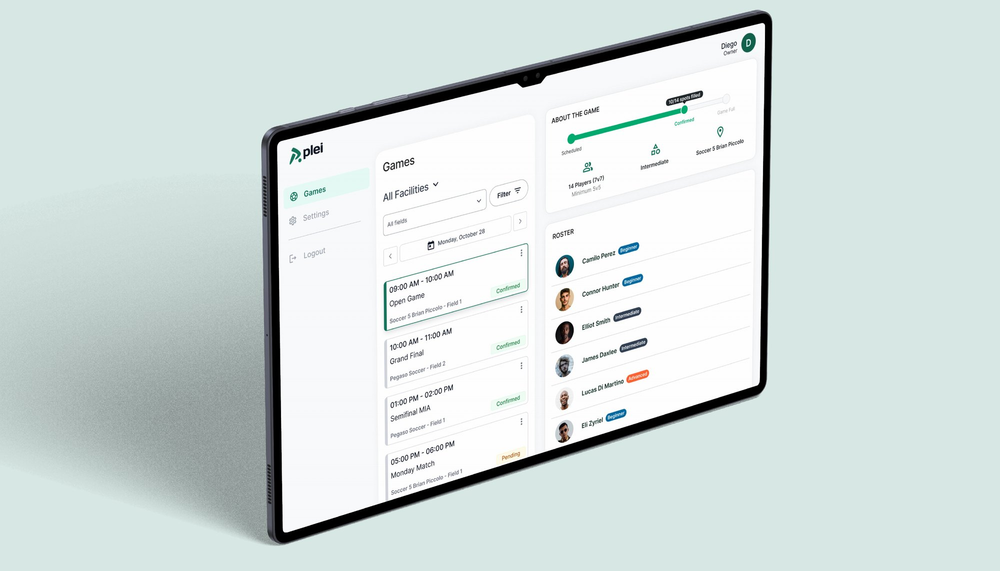
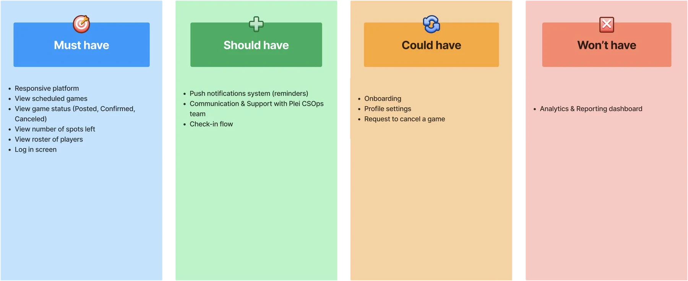
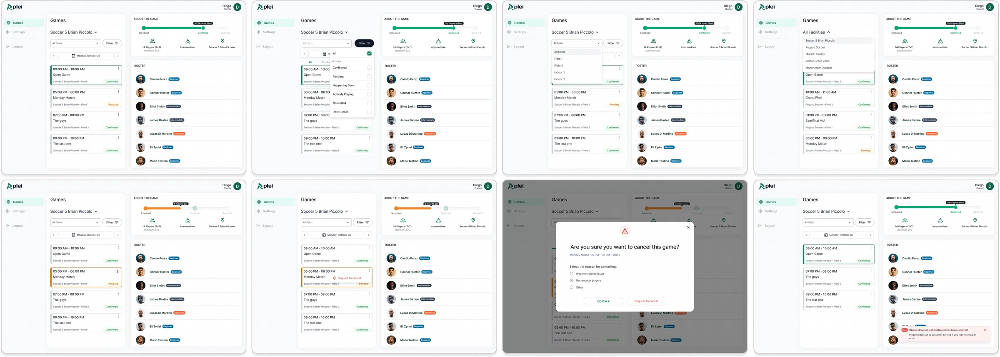
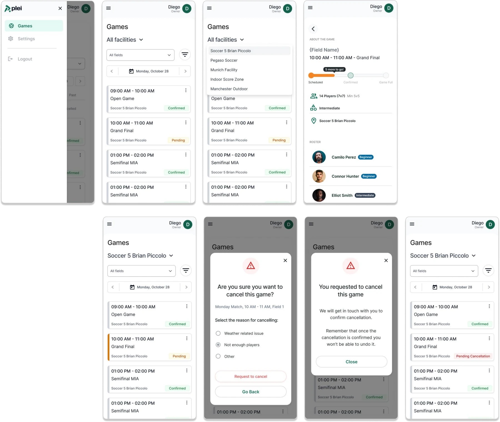
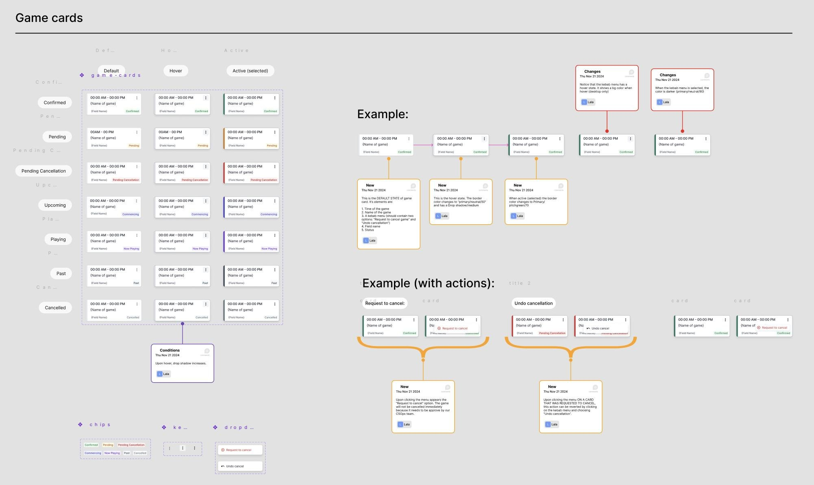

Case study · B2B SaaS · Soccer facilities
Plei: running match day from one screen.
As Senior Product Designer, I designed Plei's Facilities Dashboard end to end: a web tool for soccer facilities to manage games, player check-ins, field occupancy and daily operations in real time.

Context & Problem
Facilities were running match day on spreadsheets, WhatsApp and memory.
Operating a soccer facility is chaotic: multiple games at once, walk-ins mixed with pre-booked players, manual check-ins and last-minute changes.
Most of it ran on spreadsheets, WhatsApp, paper lists and verbal coordination. The result: operational friction, errors and stress during peak hours.
What I set out to do:
- CentralizeOne responsive dashboard instead of scattered tools.
- Real-time clarityStatus indicators that lower cognitive load.
- Faster check-inStreamlined flows for the front desk.
What I designed:
- Facility and fieldSwitch between facilities and fields in one click.
- CancellationsRequest a cancellation, and undo it.
- Field occupancySee which fields are busy, and when.
- Player check-inFast attendance tracking at the front desk.
Research & Discovery
What the facilities managers told us.
I conducted interviews with operations and facilities for a contextual understanding of how a match day actually works.
01
No single source of truthOngoing games lived in mail, WhatsApp and printed spreadsheets.02
Attendance was hard to trackManual check-ins caused delays and mistakes.03
Poor visibilityField occupancy and game status were hard to see.04
Memory as a toolHeavy reliance on verbal communication and memory.Who I designed for, and what got in the way.
Users
Facility managers and front-desk staff: non-technical users with limited time to learn a tool.Constraints
A high-pressure, real-time environment where errors have immediate real-world impact.Decisions that shaped the dashboard.
There were many possible features, and users with no time to learn a new tool. We used a MoSCoW matrix to prioritize. After building it, cancellations and player check-in moved up in priority, which left us with five core flows: selecting a facility or field, requesting and undoing cancellations, field occupancy and player check-in.

The process
How I worked.
- 01 Discover and defineInterviews, match-day workflows, and a team workshop to define core flows.
- 02 DevelopWireframes, interaction models, visual hierarchy, hi-fi design.
- 03 DeliverIteration with engineering during implementation, and dev handoff.
Design
One dashboard for games, players and fields.
Designed for speed and clarity: the goal was to reduce thinking, not add features.

Responsive, for the front desk on the move
The same flows on mobile, for staff who check players in away from a desk.

- Strong visual hierarchyWhat matters right now comes first.
- Status-based colorClear, consistent and predictable.
- Built for scanningPatterns optimized for scanning, not exploration.
The system behind the dashboard
Reusable components, status indicators and layout rules for dense information: a shared language with engineering and a scalable foundation for future tools.

- Legible statusEvery game state readable at a glance.
- Faster iterationComponents built once, reused everywhere.
- Clear handoffA shared language with engineering.
Prototype.
Match day, from picking a facility to requesting a cancellation.
Outcomes
What changed, and what I learned.
We didn't have precise metrics by the time the project wrapped up, but the qualitative signals were clear.
- Less friction on match daysOperations ran with fewer errors and less back-and-forth.
- Less manual trackingFewer spreadsheets and paper lists.
- Faster, clearer check-inA simpler flow at the front desk.
- Positive feedbackFacilities highlighted its clarity and ease of use.
- Usability is critical under pressureHigh-pressure environments leave no room for doubt.
- Clarity over completenessOperational tools must prioritize clarity.
- Small decisions, outsized impactSmall UX decisions have outsized real-world impact.